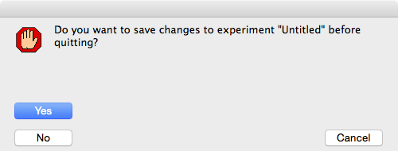

Getting started
Installing Igor Pro
- Igor Pro is a cross platform program that runs on both Windows and Mac OS X.
- You need to purchase an Igor Pro license from Wavemetrics, download the software, and install.
- To try out Igor Pro, you can download and install a fully functional but time limited demo version.
Installing Map Manager
- Once Igor Pro is installed, there is no formal installation of Map Manager
- Get the source code from Bob.
- The source code will be in a folder named 'MapManager_date' where 'date' is the date the software was created. The folder will be something like 'MapManager_20151117'.
- Run the software by double-clicking MapManager.ipf from within your source code folder.
- To fit lines in FIJI you will have to specify a hard-drive path to FIJI and install a plugin in FIJI. Please see fitting segments in fiji.
Opening Map Manager
- Open MapManager.ipf into Igor Pro (just double click the MapManager.ipf file).
- Once in Igor Pro, click in the command window to compile Map Manager and activate the main menus. The command window is in the lower left of your screen and has the window title 'Untitled'.
- To score a single timepoint stack, select the main menu 'MapManager - Stack Browser' to open the Stack Browser panel. See Simple Stack DB for more information.
- To score a timeseries of stacks (a map), select the main menu 'MapManager - Map Manager Panel' to open the main Map Manager panel. See Making A Map for more information.
Closing Map Manager
- Quit Igor Pro by selecting the main menu 'Igor Pro - Quit Igor Pro'.
- When you quit Igor Pro, you will always be prompted with the following dialog.
- Always answer No. All Map Manager analysis is saved using the 'Save' buttons from within the Map Manager interface.

Map Manager Options
- Global options can be set and saved in the Stack DB Option Panel.
- By default, there is one set of options that will be saved and reloaded the next time Map Manager is run.
- Options can also be saved to a user file. See Stack DB Options for more information.